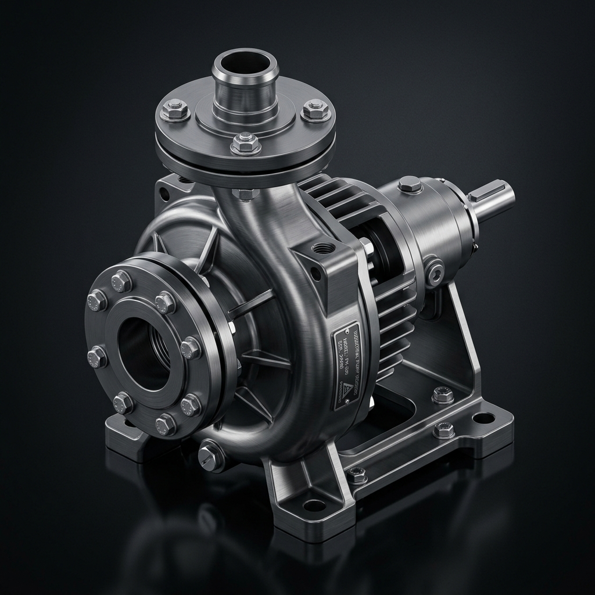

Active Design Reviews
Project completion0%
Completed Design Reviews
CompletedBracket Assembly Rev B
Design review steps
The second page shows the full engineering review lifecycle in sequence so the user can understand the project flow from requirements through continuous improvement. [file:1][web:252]
Step 1
Requirements
Define the problem, project scope, stakeholders, requirements, constraints, and verification basis. [file:1]
| Substep | Status | Action |
|---|---|---|
| Define the problem and scope | ||
| Identify stakeholders and interfaces | ||
| Capture user and business needs | ||
| Derive functional requirements | ||
| Define performance and quality targets | ||
| Establish constraints and boundaries | ||
| Non-functional requirements | ||
| Validation and testability definition | ||
| Requirements document and structure | ||
| Review, negotiate, and freeze baseline |
Step 2
Concept Review
Compare solution concepts, feasibility, risks, and the preferred approach before deeper design work. [file:1]
| Substep | Status | Action |
|---|---|---|
| Clarify review goals and scope | ||
| Capture user and stakeholder needs | ||
| Document solution concept options | ||
| Compare concepts against key requirements | ||
| Assess feasibility (technical & schedule) | ||
| Identify and list major risks | ||
| Estimate cost / benefit for each concept | ||
| State key assumptions and constraints | ||
| Capture early stakeholder feedback | ||
| Select preferred concept and rationale | ||
| Assign follow-up actions and owners |
Step 3
Preliminary Design Review
Confirm architecture, interfaces, requirement allocation, and early engineering evidence. [file:1]
| Substep | Status | Action |
|---|---|---|
| Entry criteria met for PDR | ||
| Preliminary system architecture complete | ||
| Requirements allocated to subsystems | ||
| Interfaces identified and documented | ||
| Key calculations / simulations available | ||
| Technical risks reviewed and updated | ||
| Verification strategy drafted | ||
| Manufacturability and serviceability considered | ||
| Schedule and resources reviewed | ||
| PDR actions defined and recorded |
Step 4
Detailed Design Review
Verify CAD, drawings, interfaces, materials, analyses, and manufacturability details. [file:1]
| Substep | Status | Action |
|---|---|---|
| CAD models complete for all assemblies and parts | ||
| Drawings and GD&T checked for critical features | ||
| Interfaces and clearances verified in 3D and 2D | ||
| Materials, coatings, and finishes specified | ||
| Strength / stiffness / thermal analyses reviewed | ||
| Fasteners, joints, and sealing strategy verified | ||
| Assembly sequence and access reviewed | ||
| Tolerance stack-ups and key fit conditions checked | ||
| Manufacturability with target processes confirmed | ||
| Detailed design documentation ready for release review |
Step 5
Simulation Review
Review assumptions, load cases, model quality, and correlation plans. [file:1]
| Substep | Status | Action |
|---|---|---|
| Simulation scope, objectives, and acceptance criteria defined | ||
| Geometry prepared and simplified for analysis | ||
| Mesh strategy and critical regions reviewed | ||
| Material models and fluid properties verified | ||
| Loads, boundary conditions, and operating cases validated | ||
| Solver setup, models, and assumptions reviewed | ||
| Convergence behavior and result stability checked | ||
| Sensitivity study or mesh independence reviewed where needed | ||
| Results compared with hand calculations, baseline, or test data | ||
| Simulation conclusions, limitations, and recommendations documented |
Step 6
Prototype Review
Check the first physical build, fit, function, and assembly or usability issues. [file:1]
| Substep | Status | Action |
|---|---|---|
| Prototype build scope and goals confirmed | ||
| Prototype configuration and revision documented | ||
| Form and ergonomics inspected against intent | ||
| Fit to mating parts and interfaces checked | ||
| Basic functional tests run under representative use | ||
| Assembly process, tools, and time observed | ||
| Key usability and safety issues captured | ||
| Prototype deviations vs. design and drawing noted | ||
| Manufacturing and supplier feedback collected | ||
| Prototype learnings and next-iteration actions agreed |
Step 7
Testing Validation
Ensure test plans, execution, results, and corrective actions support compliance. [file:1]
| Substep | Status | Action |
|---|---|---|
| Test objectives and success criteria confirmed | ||
| Verification and validation test plan approved | ||
| Test procedures, setups, and instrumentation ready | ||
| Test samples, configuration, and revision documented | ||
| Test execution completed and anomalies recorded | ||
| Results analyzed against requirements and limits | ||
| Non-conformances and root causes identified | ||
| Corrective actions defined and owners assigned | ||
| Re-tests or additional evidence completed as needed | ||
| Test report, traceability, and sign-off finalized |
Step 8
Manufacturing Readiness
Confirm tooling, suppliers, instructions, and process capability for production. [file:1]
| Substep | Status | Action |
|---|---|---|
| Production configuration and BOM frozen for build | ||
| Critical drawings, specs, and routings released | ||
| Tooling, jigs, and fixtures built and validated | ||
| Work instructions and inspection plans approved | ||
| Suppliers qualified and material lead times confirmed | ||
| Process capability and first article results reviewed | ||
| Production quality plan and control methods in place | ||
| Packaging, labeling, and logistics validated | ||
| Production staffing, training, and maintenance prepared | ||
| Ramp-up risks, KPIs, and readiness sign-off agreed |
Step 9
Final Release
Freeze the released configuration and complete cross-functional sign-off. [file:1]
| Substep | Status | Action |
|---|---|---|
| Released configuration and change freeze agreed | ||
| All required tests passed or waivers approved | ||
| Final drawings, models, and specifications released to PLM | ||
| BOM, part numbers, and revision status verified | ||
| Regulatory, safety, and compliance approvals confirmed | ||
| Service, spares, and documentation packages ready | ||
| Customer communication and release notes prepared | ||
| Cross-functional release review and sign-off completed | ||
| Release data archived with traceability and access control | ||
| Post-release monitoring and feedback plan established |
Step 10
Continuous Improvement
Replace the future-improvement stage with focused optimization work for weight, cost, and assembly improvements after release.
| Substep | Status | Action |
|---|---|---|
| Weight Optimization | ||
| Cost Optimization | ||
| Assembly Optimization |
Pump Housing Rev C/Detailed Design Review/Sealing interface verified
Step workspace
The third page is a focused workspace for one substep where users can add technical notes, evidence, actions, and ownership details, which aligns with dedicated review and feedback workspace patterns. [web:248][web:252]
Item details
Sealing interface verified
Explain what sealing conditions, materials, and tolerances must be verified for this interface.
Evidence and actions
Drop CAD snapshots, drawings, PDFs, photos, or test files here.
Presentation package prepared
The review content is structured and ready for real PPTX export from the workspace-safe flow. Use this app version for collecting data; export should be handled outside the embedded app.